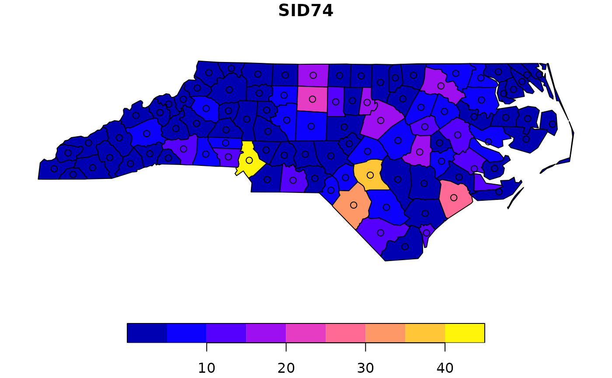
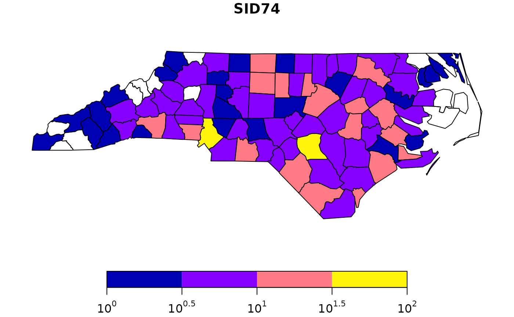
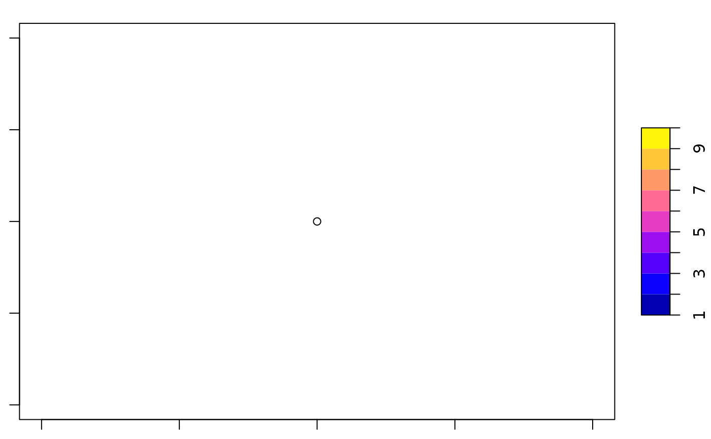

plot one or more attributes of an sf object on a map Plot sf object
# S3 method for sf plot( x, y, ..., main, pal = NULL, nbreaks = 10, breaks = "pretty", max.plot = if (is.null(n <- getOption("sf_max.plot"))) 9 else n, key.pos = get_key_pos(x, ...), key.length = 0.618, key.width = lcm(1.8), reset = TRUE, logz = FALSE, extent = x, xlim = st_bbox(extent)[c(1, 3)], ylim = st_bbox(extent)[c(2, 4)] ) get_key_pos(x, ...) # S3 method for sfc_POINT plot( x, y, ..., pch = 1, cex = 1, col = 1, bg = 0, lwd = 1, lty = 1, type = "p", add = FALSE ) # S3 method for sfc_MULTIPOINT plot( x, y, ..., pch = 1, cex = 1, col = 1, bg = 0, lwd = 1, lty = 1, type = "p", add = FALSE ) # S3 method for sfc_LINESTRING plot(x, y, ..., lty = 1, lwd = 1, col = 1, pch = 1, type = "l", add = FALSE) # S3 method for sfc_CIRCULARSTRING plot(x, y, ...) # S3 method for sfc_MULTILINESTRING plot(x, y, ..., lty = 1, lwd = 1, col = 1, pch = 1, type = "l", add = FALSE) # S3 method for sfc_POLYGON plot( x, y, ..., lty = 1, lwd = 1, col = NA, cex = 1, pch = NA, border = 1, add = FALSE, rule = "evenodd" ) # S3 method for sfc_MULTIPOLYGON plot( x, y, ..., lty = 1, lwd = 1, col = NA, border = 1, add = FALSE, rule = "evenodd" ) # S3 method for sfc_GEOMETRYCOLLECTION plot( x, y, ..., pch = 1, cex = 1, bg = 0, lty = 1, lwd = 1, col = 1, border = 1, add = FALSE ) # S3 method for sfc_GEOMETRY plot( x, y, ..., pch = 1, cex = 1, bg = 0, lty = 1, lwd = 1, col = ifelse(st_dimension(x) == 2, NA, 1), border = 1, add = FALSE ) # S3 method for sfg plot(x, ...) plot_sf( x, xlim = NULL, ylim = NULL, asp = NA, axes = FALSE, bgc = par("bg"), ..., xaxs, yaxs, lab, setParUsrBB = FALSE, bgMap = NULL, expandBB = c(0, 0, 0, 0), graticule = NA_crs_, col_graticule = "grey", border, extent = x ) sf.colors(n = 10, cutoff.tails = c(0.35, 0.2), alpha = 1, categorical = FALSE)
Arguments
| x | object of class sf |
|---|---|
| y | ignored |
| ... | further specifications, see plot_sf and plot and details. |
| main | title for plot ( |
| pal | palette function, similar to rainbow, or palette values; if omitted, |
| nbreaks | number of colors breaks (ignored for |
| breaks | either a numeric vector with the actual breaks, or a name of a method accepted by the |
| max.plot | integer; lower boundary to maximum number of attributes to plot; the default value (9) can be overriden by setting the global option |
| key.pos | integer; side to plot a color key: 1 bottom, 2 left, 3 top, 4 right; set to |
| key.length | amount of space reserved for the key along its axis, length of the scale bar |
| key.width | amount of space reserved for the key (incl. labels), thickness/width of the scale bar |
| reset | logical; if |
| logz | logical; if |
| extent | object with an |
| xlim | see plot.window |
| ylim | see plot.window |
| pch | plotting symbol |
| cex | symbol size |
| col | color for plotting features; if |
| bg | symbol background color |
| lwd | line width |
| lty | line type |
| type | plot type: 'p' for points, 'l' for lines, 'b' for both |
| add | logical; add to current plot? Note that when using |
| border | color of polygon border(s) |
| rule | see polypath; for |
| asp | see below, and see par |
| axes | logical; should axes be plotted? (default FALSE) |
| bgc | background color |
| xaxs | see par |
| yaxs | see par |
| lab | see par |
| setParUsrBB | default FALSE; set the |
| bgMap | object of class |
| expandBB | numeric; fractional values to expand the bounding box with, in each direction (bottom, left, top, right) |
| graticule | logical, or object of class |
| col_graticule | color to used for the graticule (if present) |
| n | integer; number of colors |
| cutoff.tails | numeric, in [0,0.5] start and end values |
| alpha | numeric, in [0,1], transparency |
| categorical | logical; do we want colors for a categorical variable? (see details) |
Details
plot.sf maximally plots max.plot maps with colors following from attribute columns,
one map per attribute. It uses sf.colors for default colors. For more control over placement of individual maps,
set parameter mfrow with par prior to plotting, and plot single maps one by one; note that this only works
in combination with setting parameters key.pos=NULL (no legend) and reset=FALSE.
plot.sfc plots the geometry, additional parameters can be passed on
to control color, lines or symbols.
When setting reset to FALSE, the original device parameters are lost, and the device must be reset using dev.off() in order to reset it.
parameter at can be set to specify where labels are placed along the key; see examples.
plot_sf sets up the plotting area, axes, graticule, or webmap background; it
is called by all plot methods before anything is drawn.
The argument setParUsrBB may be used to pass the logical value TRUE to functions within plot.Spatial. When set to TRUE, par(“usr”) will be overwritten with c(xlim, ylim), which defaults to the bounding box of the spatial object. This is only needed in the particular context of graphic output to a specified device with given width and height, to be matched to the spatial object, when using par(“xaxs”) and par(“yaxs”) in addition to par(mar=c(0,0,0,0)).
The default aspect for map plots is 1; if however data are not
projected (coordinates are long/lat), the aspect is by default set to
1/cos(My * pi/180) with My the y coordinate of the middle of the map
(the mean of ylim, which defaults to the y range of bounding box). This
implies an Equirectangular projection.
non-categorical colors from sf.colors were taken from bpy.colors, with modified cutoff.tails defaults
If categorical is TRUE, default colors are from https://colorbrewer2.org/ (if n < 9, Set2, else Set3).
Examples
nc = st_read(system.file("gpkg/nc.gpkg", package="sf"), quiet = TRUE) # plot single attribute, auto-legend: plot(nc["SID74"])# plot multiple: plot(nc[c("SID74", "SID79")]) # better use ggplot2::geom_sf to facet and get a single legend!# adding to a plot of an sf object only works when using reset=FALSE in the first plot: plot(nc["SID74"], reset = FALSE)# and we need to reset the plotting device after that, e.g. by layout(1) # when plotting only geometries, the reset=FALSE is not needed: plot(st_geometry(nc))# add a custom legend to an arbitray plot: layout(matrix(1:2, ncol = 2), widths = c(1, lcm(2))) plot(1) .image_scale(1:10, col = sf.colors(9), key.length = lcm(8), key.pos = 4, at = 1:10)sf.colors(10)#> [1] "#0000B3FF" "#0400FFFF" "#4500FFFF" "#8500FFFF" "#C527D8FF" "#FF50AFFF" #> [7] "#FF7A85FF" "#FFA35CFF" "#FFCC33FF" "#FFF50AFF"